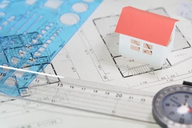
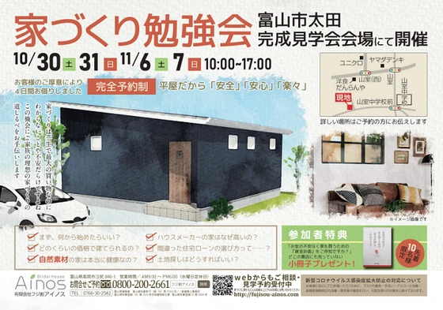
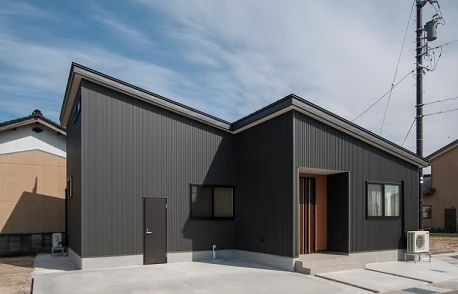
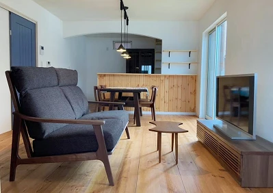
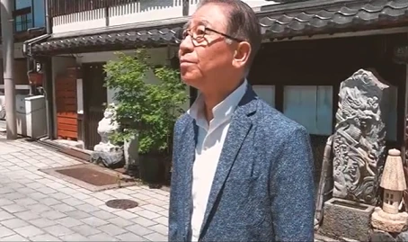
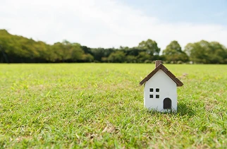
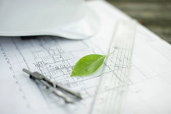
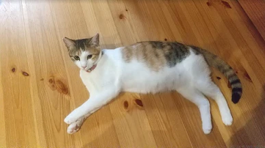
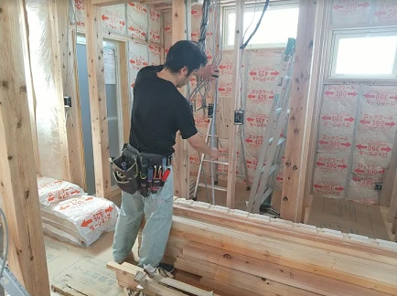
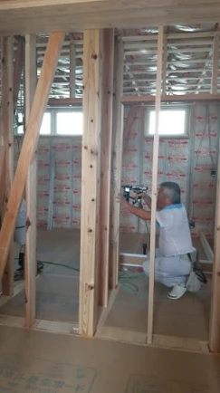

平屋のデメリットと注意するポイント
こんにちは。富山で自然素材にこだわるホンモノの家、フジ創アイノスです。 ✔平屋のデメリットとは？ 平屋にした場合のデメリットは、日当たりが良い土地の場合、リビングや各居室が全て外からの視線にさらされやすくなってしまうとい
続きを読む →FUJISOU AINOS JOURNAL
家づくりのこと、暮らしのこと。
日々の想いを、お伝えします。
新しい記事から 19・40ページ
こんにちは。富山で自然素材にこだわるホンモノの家、フジ創アイノスです。 ✔平屋のデメリットとは？ 平屋にした場合のデメリットは、日当たりが良い土地の場合、リビングや各居室が全て外からの視線にさらされやすくなってしまうとい
続きを読む →こんにちは。富山で自然素材にこだわるホンモノの家、フジ創アイノスです。 色々なメリットがある平屋ですが、一般的に平屋には「価格が高くなる」というイメージと、「土地がかなり広く必要である」というイメージがあります。 しかし
続きを読む →
こんにちは。富山で自然素材にこだわるホンモノの家、フジ創アイノスです。 家を建てる誰もが、リビングダイニングキッチンを明るく開放的な空間にしたいとお考えだと思います。 そのために、出来るだけリビングダイニングを広くつくり
続きを読む →こんにちは。富山で自然素材にこだわるホンモノの家、フジ創アイノスです。 平屋の家は、耐震性、耐久性、将来性、住みやすさ、コスト面など多くのメリットがあります。 前回ご紹介させていただいた間口9m×奥行き18mの50坪の南
続きを読む →こんにちは。富山で自然素材にこだわるホンモノの家、フジ創アイノスです。 例えば、50坪で、間口が９mで、奥行きが18m、そして南向きの土地があるとします。 このような場合、一般的には2階建ての家が建ちます。 1階にはリビ
続きを読む →
こんにちは。富山で自然素材にこだわるホンモノの家、フジ創アイノスです。 10月30日（土）・31日（日）、11月6日（土）・7日（日）に富山市太田「完成見学会」＆「家づくり見学会」を行います。 お客様のご厚意により、完成
続きを読む →
こんにちは。富山で自然素材にこだわるホンモノの家、フジ創アイノスです。 今回は、暮らしやすくコストも安い「平屋」についてお話しします。 例えば、2階建て住宅の多くが、洗濯物を2階のベランダで干しています。 しかし洗濯機が
続きを読む →
こんにちは。富山で自然素材にこだわるホンモノの家、フジ創アイノスです。 アイノスの家でよく驚かれるのが「価格」です。 こんなお客様の声をいただいています。 「家族の健康を考えて、自然素材の家が良いと思いましたが、実際にい
続きを読む →
こんにちは。富山で自然素材にこだわるホンモノの家、フジ創アイノスです。 アイノスの家は「ブライダルハウス」という名前でもご案内しています。 それは、『結婚する人にこそ安心して子育てできる自然素材の注文住宅に住んでいただき
続きを読む →
こんにちは。富山で自然素材にこだわるホンモノの家、フジ創アイノスです。 家づくりをするにあたって、毎月の返済額は、家賃ぐらいが妥当なのか？家賃より高くなって当たり前なのか？家賃より低く設定すべきなのか？悩んでしまいますよ
続きを読む →
こんにちは。富山で自然素材にこだわるホンモノの家、フジ創アイノスです。 今回はフジ創アイノス代表取締役、荒井一の家づくりに対する想いをご紹介します。 住宅業界には、お客さんの立場に立たない業者が多いことに疑問を持っていた
続きを読む →
こんにちは。富山で自然素材にこだわるホンモノの家、フジ創アイノスです。 自然素材の家は、健康面が安心、ということ以外にも、お子さんのいるご家族におすすめなポイントがあります。 それは壁や床のメンテナンスが自分で簡単にでき
続きを読む →
こんにちは。富山で自然素材にこだわるホンモノの家、フジ創アイノスです。 前回に続いて、ウッドデッキを作る上で、西向き・東向きの土地はどうか考えてみます。 これらの土地では、基本的に道路面にウッドデッキをつくりません。 リ
続きを読む →こんにちは。富山で自然素材にこだわるホンモノの家、フジ創アイノスです。 ウッドデッキは、新居を建てる人にとってあこがれのアイテムではないでしょうか。 バーベキューをしたり、子供たちを遊ばせたり、本を読み、ひなたぼっこをし
続きを読む →こんにちは。富山で自然素材にこだわるホンモノの家、フジ創アイノスです。 家をつくるとき、「廊下」は欲しいですか？ 廊下について具体的に考えることってあまりないと思いますが、実は意識しながら間取りを考えないと、知らず知らず
続きを読む →こんにちは。富山で自然素材にこだわるホンモノの家、フジ創アイノスです。 先日、ある妊婦さんからこんなお話を聞きました。 「結婚してすぐに家を建て始めて、先日完成したので引っ越したんですが、家の中の臭いに耐えられなくて、仕
続きを読む →こんにちは。富山で自然素材にこだわるホンモノの家、フジ創アイノスです。 昨日は夏の暑さでしたが、今日は昨日より8℃も低い肌寒い日になりました。 季節の変わり目など寒暖差が大きくなってくると、咳や鼻水が出る、体がだるくなる
続きを読む →こんにちは。富山で自然素材にこだわるホンモノの家、フジ創アイノスです。 ✔家づくりの打ち合わせをしている時の注意点 前回お伝えしたように、日常では高いと感じる金額でも、家づくりでは高いと感じにくくなってしまいます。 結果
続きを読む →こんにちは。富山で自然素材にこだわるホンモノの家、フジ創アイノスです。 家を買う時、多くの方は "金銭感覚が麻痺" してしまいます。 例えば、日常生活の中で5万円の買い物といえば、決断に悩む大きな買い物ではないでしょうか
続きを読む →
こんにちは。富山で自然素材にこだわるホンモノの家、フジ創アイノスです。 前回に続いて、片付けやすく、いつもスッキリした家にするための収納について考えていきます。 ▼管理しやすい収納とは？ 人の脳は、物事が複雑になればなる
続きを読む →こんにちは。富山で自然素材にこだわるホンモノの家、フジ創アイノスです。 核家族で、共働きの家庭が多く、忙しい現代人。 掃除の手間はできるだけカットしたいですよね。 そのために、出来るだけ片付けがしやすい家づくりについて考
続きを読む →
こんにちは。富山で自然素材にこだわるホンモノの家、フジ創アイノスです。 スタッフの仙田です。 我が家は私と夫と子供と３人で、２年前からアイノスの家で暮らしています。 今は２匹の猫も一緒に暮らしています(^^) 家に来るお
続きを読む →
こんにちは。富山で自然素材にこだわるホンモノの家、フジ創アイノスです。 前回に続き、現場の職人さんへのインタビューです。 電気工事をしている影山さんにお話を聞きました。 Q「仕事で気を付けていることは？」 影山さん「配線
続きを読む →
こんにちは。富山で自然素材にこだわるホンモノの家、フジ創アイノスです。 今回は富山市の建築現場にお邪魔してきました。 シンプル＆合理的で人気の平屋のお家です。 いつも現場の中心になってくれている大工の松本さんを発見。 ち
続きを読む →